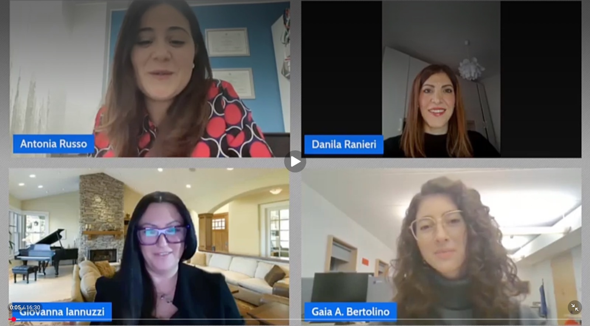

Interview
Women in STEM: Experiences in ICT — International Day of Women and Girls in Science
Online

To mark the International Day of Women and Girls in Science, celebrated on 11 February for the past ten years, AIDIA invited me to take part in a four-voice interview on women in STEM.
The day is an opportunity to recognise the fundamental contribution of women to scientific and technological innovation, and to reflect on the importance of gender equality in STEM. In the interview, we shared our personal experiences in the ICT sector. Many thanks to AIDIA for choosing to celebrate the day in this way.